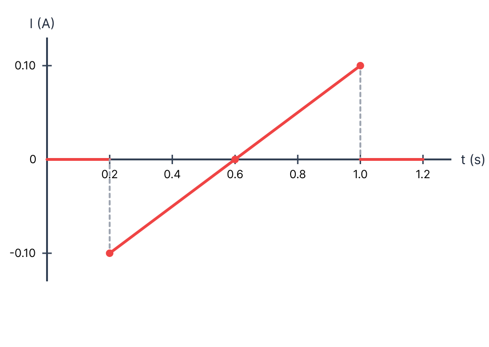

פתרון מלא: בגרות בפיזיקה - חשמל 2023, שאלה 6
השראה אלקטרומגנטית וחוק פארדיי-לנץ
פתרון מודרך, צעד-אחר-צעד הכולל ניתוח גרפי ושיקולי כוחות.
מבט כללי על השאלה
שלום תלמידים יקרים! לפנינו שאלה מצוינת בנושא השראה אלקטרומגנטית וחוק פארדיי-לנץ.
נפתור אותה צעד אחר צעד, בצורה מסודרת וברורה. קחו דף ועט, ובואו נתחיל!

סעיף א': חישוב שטף, כא"מ וזרם בכל פרק זמן
צורת המסגרת: ריבועית, בעלת כריכה אחת \( N = 1 \).
אורך צלע המסגרת הוא \( a = 50 \text{ cm} \). נבצע המרה ליחידות MKS (מטרים):
\( a = \frac{50}{100} = 0.5 \text{ m} \)
שטח המסגרת הכולל (שטח ריבוע):
\( A = a^2 = 0.5^2 = 0.25 \text{ m}^2 \)
התנגדות המסגרת: \( R = 2\ \Omega \).
השדה המגנטי ניצב למישור המסגרת, לכן הזווית בין השדה לווקטור הנורמל (הניצב למשטח) היא \( \alpha = 0^\circ \) (או \( 180^\circ \), נבחר \( 0^\circ \) לנוחות).
למצוא עבור כל אחד משלושת פרקי הזמן (I, II, III) ביטויים כפונקציה של הזמן \( t \) עבור:
- השטף המגנטי \( \Phi_B \).
- הכא"מ המושרה \( \varepsilon \).
- עוצמת הזרם המושרה \( I \).
פתרון צעד-אחר-צעד:
נחשב את הגדלים עבור כל פרק זמן בנפרד:
השדה קבוע: \( B(t) = 0.09\text{ T} \).
השדה משתנה לפי הפונקציה: \( B(t) = -t^2 + 1.2t - 0.11 \).
נגזור את פונקציית השטף לפי הזמן לקבלת הכא"מ:
השדה שוב קבוע: \( B(t) = 0.09\text{ T} \).
\(\Phi_B = 0.0225\)
\(\varepsilon = 0\)
\(I = 0\)
\(\Phi_B = -0.25t^2 + 0.3t - 0.0275\)
\(\varepsilon = 0.5t - 0.3\)
\(I = 0.25t - 0.15\)
\(\Phi_B = 0.0225\)
\(\varepsilon = 0\)
\(I = 0\)
סעיף ב': קביעת כיוון הזרם ברגע \( t = 0.3 \text{ s} \)
רגע הזמן לבדיקה הוא \( t = 0.3 \text{ s} \). רגע זה שייך לפרק זמן II.
כיוון השדה המגנטי החיצוני \( \vec{B} \) הוא לתוך הדף (מסומן באיקסים בשרטוט).
את כיוון הזרם המושרה במסגרת (עם כיוון השעון או נגד כיוון השעון).
פתרון צעד-אחר-צעד:
ראשית נבדוק האם שטף השדה המגנטי פנימה (לתוך הדף) גדל או קטן ברגע \( t = 0.3 \text{ s} \).
מתוך גרף הנתון (או מגזירת הפונקציה בסעיף הקודם \( \frac{dB}{dt} = -2t + 1.2 \)), נציב \( t=0.3 \):
מאחר והשיפוע חיובי, גודל השדה המגנטי (הפונה לתוך הדף) נמצא במגמת גדילה. לכן גם השטף המגנטי דרך המסגרת גדל.
על פי חוק לנץ, המסגרת תגיב ביצירת שדה מגנטי מושרה \( \vec{B}_{in} \) שיתנגד לגדילה זו. כלומר, השדה המושרה יופנה החוצה מן הדף (אלינו).
על פי כלל יד ימין, כדי ליצור שדה מגנטי הפונה החוצה מן הדף, הזרם במסגרת חייב לזרום נגד כיוון השעון.
סעיף ג': סרטוט גרף הזרם המושרה
פונקציית הזרם שחישבנו בסעיף א': \( I(t) = 0.25t - 0.15 \) בפרק זמן II (וזרם אפס בפרקי הזמן האחרים).
הגדרה מהשאלה: ערך חיובי של הזרם בגרף ייצג זרם הזורם עם כיוון השעון.
לשרטט גרף של \( I \) כפונקציה של \( t \) מרגע \( t=0 \) עד \( t=1.2\text{ s} \).
נבדוק את הסימן של הפונקציה שלנו בהתאם להגדרה. בסעיף ב' מצאנו שברגע \( t=0.3 \) הזרם זורם נגד כיוון השעון. על פי הגדרת השאלה, ערך זה אמור להיות שלילי בגרף. נציב בפונקציה שלנו ונוודא:
הערך אכן מתקבל שלילי! משמעות הדבר היא שהפונקציה שפיתחנו בסעיף א' כבר תואמת להגדרת הסימנים של השאלה. לא צריך להוסיף מינוס.
פתרון צעד-אחר-צעד:
נחשב נקודות קצה על מנת לסרטט קו ישר במקטע II (\( 0.2 \le t < 1.0 \)):
- עבור \( t = 0.2 \): \( I = 0.25(0.2) - 0.15 = -0.100 \text{ A} \)
- עבור \( t = 1.0 \): \( I = 0.25(1.0) - 0.15 = +0.100 \text{ A} \)
- נקודת חיתוך עם ציר t (זרם אפס): \( 0.25t - 0.15 = 0 \Rightarrow t = 0.6 \text{ s} \)

סעיף ד': מטען חשמלי
הגרף ששרטטנו בסעיף ג', המציג את הזרם כפונקציה של הזמן.
(1) לחשב את כמות המטען החשמלי \( q \) שעבר בתיל בין \( t=0 \) ל- \( t=0.6\text{ s} \).
(2) לקבוע האם כמות המטען שעברה בין \( t=0.6\text{ s} \) ל- \( t=1.2\text{ s} \) גדולה, קטנה או שווה לזו שחושבה ב-(1), ולנמק.
פתרון צעד-אחר-צעד:
תת-סעיף (1):
נחשב את השטח הכלוא בין \( t=0 \) ל- \( t=0.6 \). זהו שטח של משולש (מכפלת הבסיס $b$ בגובה $h$ חלקי 2). מאחר והשאלה מבקשת "כמות מטען" (גודל), נחשב בערך מוחלט:
תת-סעיף (2):
נחשב או נתבונן בשטח הכלוא בין \( t=0.6 \) ל- \( t=1.2 \). זהו משולש זהה במידותיו הגיאומטריות למשולש הקודם:
סעיף ה': כוחות מגנטיים על המסגרת (הרחבה/כיווץ)
ארבעה פרקי זמן מוצעים לבחירה. יש לבחור באיזה מהם פעלו כוחות מגנטיים להרחבת (הגדלת) המסגרת.
את פרק הזמן המדויק מבין הארבעה, כולל נימוק (מילולי או בעזרת חישוב כוחות).
פתרון צעד-אחר-צעד:
נבחן את פרקי הזמן. כוח מופעל רק כאשר יש זרם (לפי הנוסחה), ולכן ניתן מיד לפסול את פרק זמן 1 (\( 0 < t < 0.2 \)) ואת פרק זמן 4 (\( 1.0 < t < 1.2 \)) שבהם הזרם הוא אפס.
נשארו פרק זמן 2 ופרק זמן 3. ננתח את כיוון הכוחות בפרק זמן 3 (\( 0.8 \le t < 1.0\text{ s} \)):
- על פי הגרף שסרטטנו, בפרק זמן זה הזרם חיובי, כלומר זורם עם כיוון השעון.
- השדה המגנטי החיצוני \( \vec{B} \) מכוון לתוך הדף.
נפעיל את כלל יד ימין על הצלע העליונה של המסגרת:
- זרם (\( I \)) זורם ימינה.
- שדה (\( \vec{B} \)) לתוך הדף.
- לכן כוח (\( \vec{F} \)) פועל למעלה (החוצה מהמסגרת).
באופן דומה, הכוח על כל צלע יפנה החוצה (הרחבה). ראו תרשים:
לחלופין, בפרק זמן 2 (\( 0.2 < t < 0.4 \)) הזרם זורם נגד כיוון השעון, ולכן היפוך כיוון הזרם הופך גם את כיוון הכוח (יפעל פנימה לכיווץ).